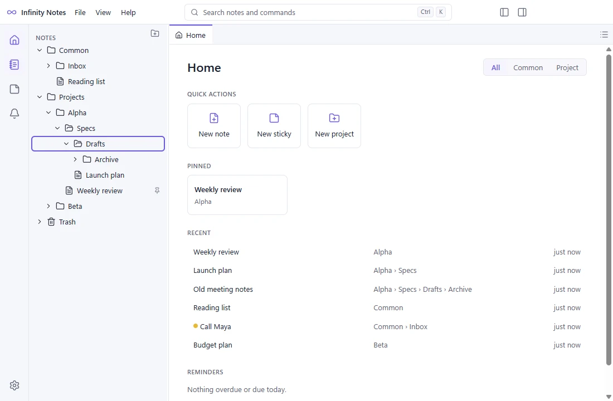
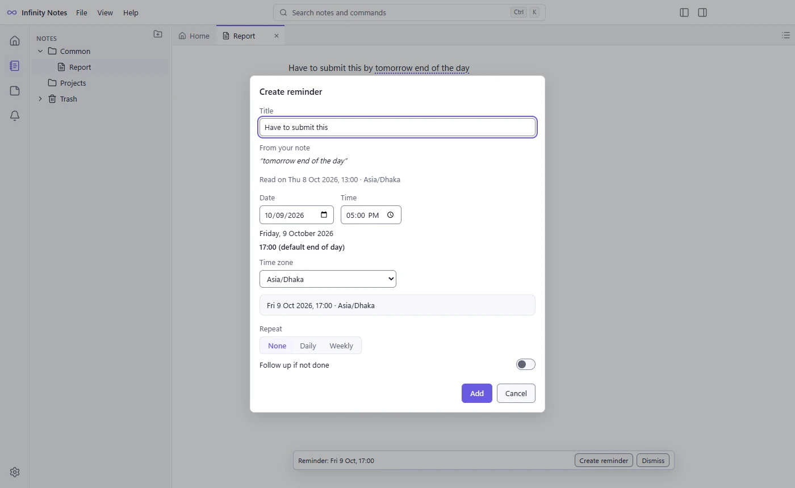
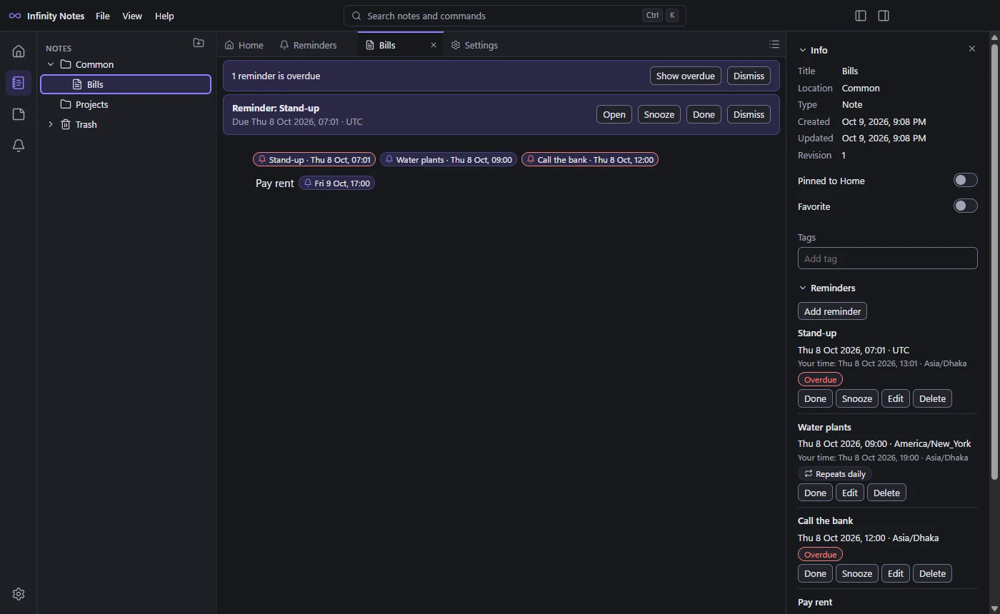
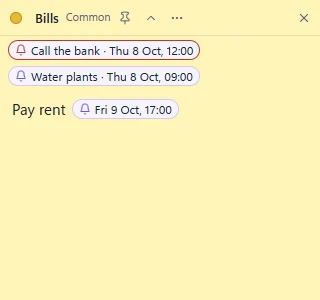

Notes and projects
Rich or plain-text notes in Common or in projects with folders of any depth. Tabs, a Home dashboard, autosave, version history and a Trash you can restore from.
Offline notes, stickies and reminders for Windows and Linux.
Write notes, float any of them as a sticky on your desktop, and get reminded on time in any time zone. Free, private, and nothing ever leaves your computer.
Latest release · Windows 11 and Linux x64 · Free for personal and commercial use

Rich or plain-text notes in Common or in projects with folders of any depth. Tabs, a Home dashboard, autosave, version history and a Trash you can restore from.
Float any note as its own small window. Type in the sticky or in the main window: both show the same note as you write. Colors, collapse and always on top.
Reminders in any time zone, with repeats, follow-ups and quiet hours, shown in your own time too. A small widget lists what is due today, upcoming and overdue.
Write "submit this by tomorrow end of the day" and Infinity Notes suggests a reminder. Nothing is scheduled until you check the preview and confirm it.
Link notes and even single paragraphs, and see what links back. Tags and fast full-text search with Ctrl+K find anything in a moment.
Back up everything into one file, by hand or automatically. Restore checks the file first and keeps your previous data. Export, import and Markdown export too.



Latest release. Free for personal and commercial use. The files download directly from GitHub Releases.
Verify your download with SHA256SUMS.txt. Older versions and release notes: all releases.
Infinity Notes works fully offline. There are no accounts, no sync, no telemetry and no network access: your notes, stickies and reminders live in one data folder on your computer, and your backups are files you own. Uninstalling keeps your data.
The installers are not code-signed yet. Windows SmartScreen may say "Windows protected your PC": choose More info, then Run anyway. Some Linux desktops warn about an unknown publisher. Compare the file with SHA256SUMS.txt if you want to be sure it is the official build.
Infinity Notes is developed by Ashiqur Rahman Emran. It is freeware: free to download and use, for personal and commercial work. The source code is public for transparency, but it is not open source; see the license.
Questions, ideas and bug reports are welcome on GitHub Issues. Read the user guide to get started.